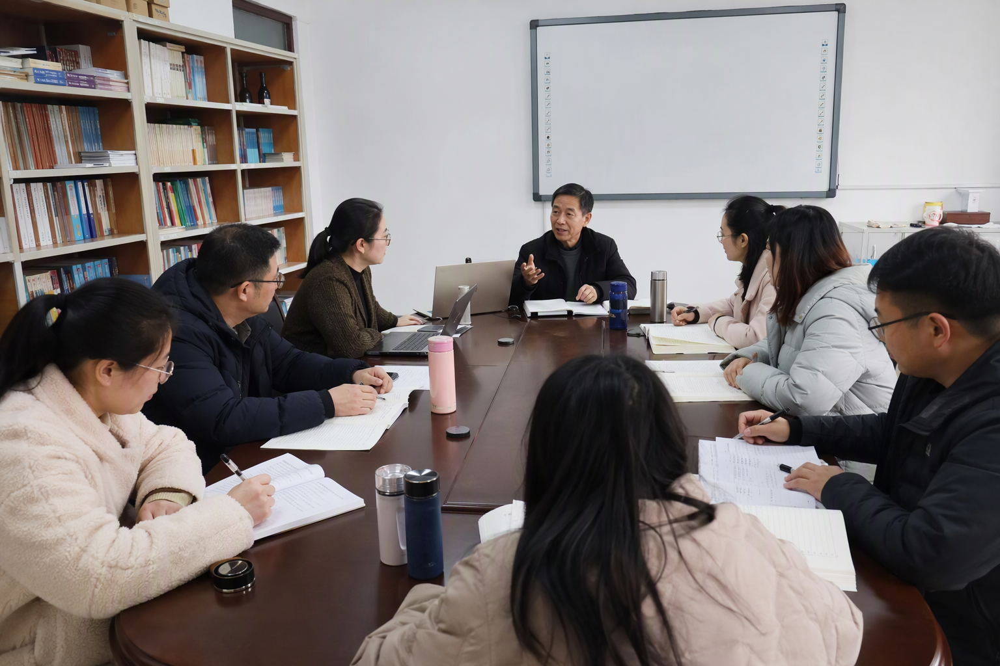

科技史融入前沿科技探究实践交流活动在东城举办
2026年6月26日，由北京市中小学科学教育研究指导中心、北京教科院基教研中心等单位主办，东城区相关部门和北京市第一六六中学承办的“繁星计划”科技史融入前沿科技探究实践交流活动在学校举行。
活动以“做中求真·以史促探·面向前沿”为主题，围绕如何把科技史转化为可落地的探究任务展开研讨。来自不同区域的教研专家和骨干教师以智慧温室、人工肾设备、量子通信、清洁能源等主题分享课例，讨论科学史、工程实践与课堂学习之间的连接。

科学探究配图（AI示意，不代表报道现场）活动中，北京市第一六六中学教师展示了智慧温室种植、人工肾等探究课例，把真实问题转化为学生可以观察、实验、分析和表达的学习任务。活动既关注科学知识，也关注学生在实践中形成的责任意识与合作能力。
东教印象的报道将此次活动放在东城区中小学科学教育改革背景下，强调依托“繁星计划”持续推进学史、探知与实践的贯通。学校在其中承担了公开课展示、教研交流和资源共享等工作。
原文：东教印象《做中求真・以史促探・面向前沿》。本文为摘要，图片为 AI 示意。